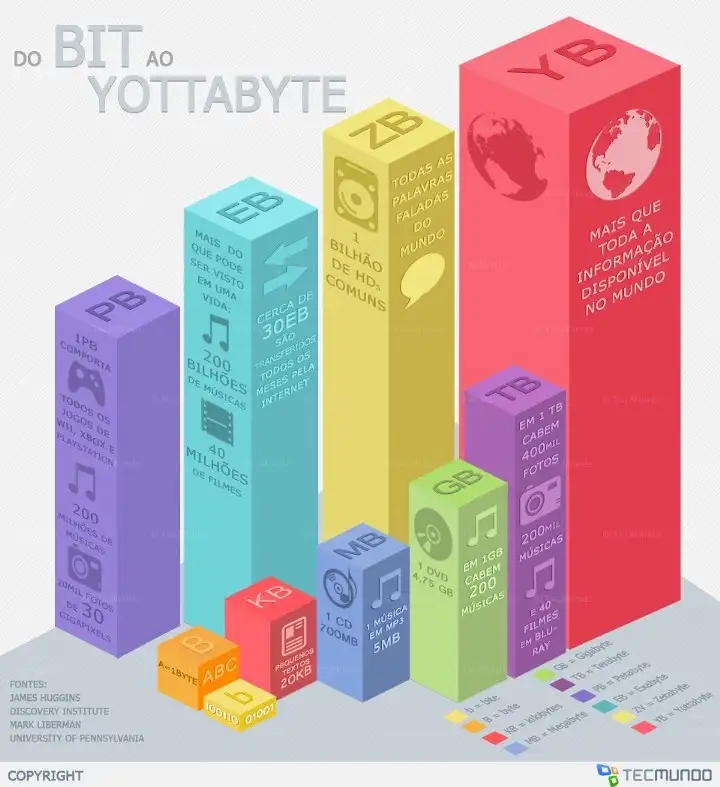
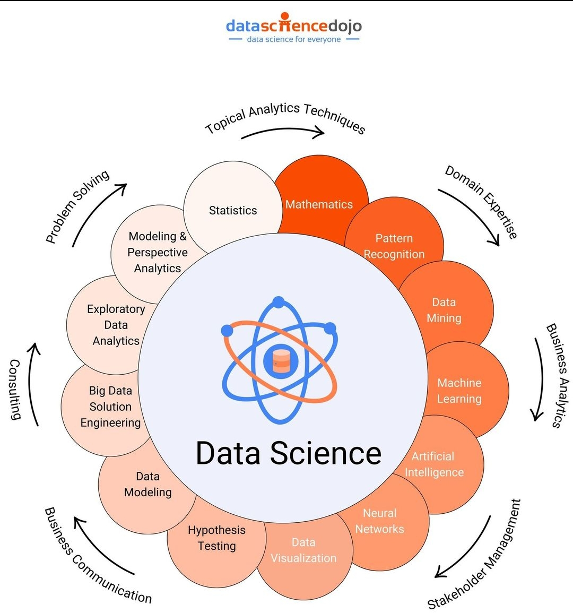
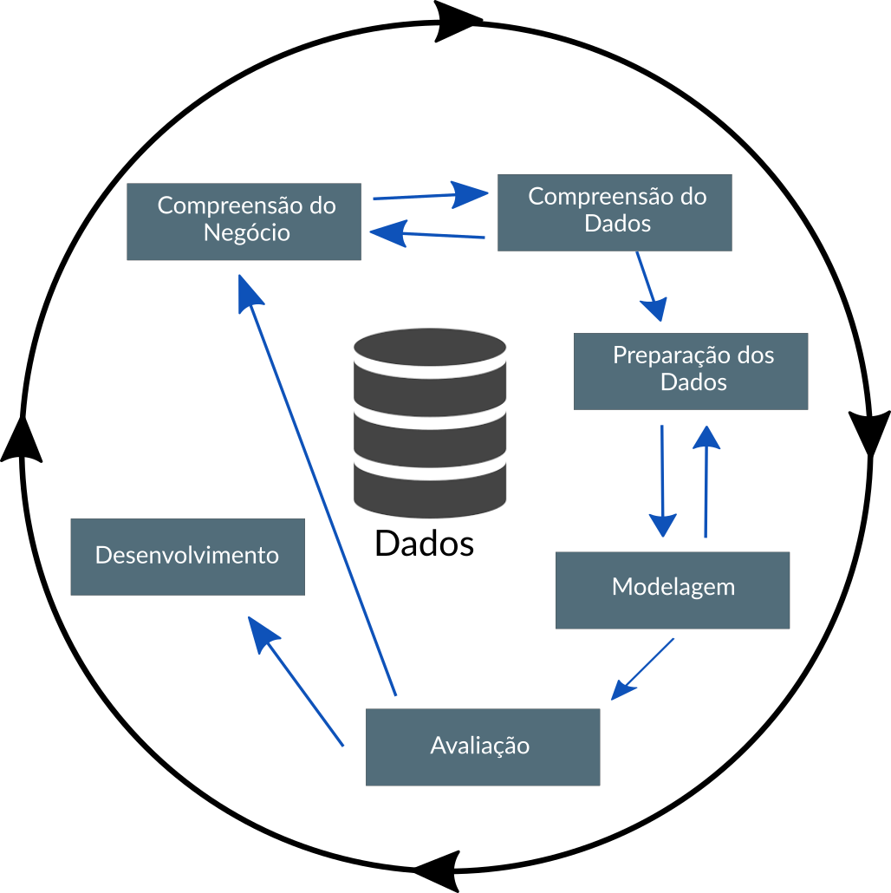

Introdução à Ciência de Dados
Conceitos de Ciência de Dados
UFPE
Estrutura
- O que é Ciência de Dados;
- Conceitos básicos da ciência de dados;
- Como surgiu a Ciência de Dados;
- Principais campos e pilares que formam a Ciência de Dados;
- CRISP-DM;
Introdução à Ciência de Dados
Provavelmente você já ouviu falar do termo sobre o qual “o emprego é considerado o mais sexy do Século 21”, correto?
- O data science é um dos assuntos em evidência atualmente, está em alta na mídia, redes sociais, em livros, jornais de negócio, em conferências, entre outros lugares.
- ao longo dessa disciplina vou tentar fazer você entender o que é a Ciência de Dados e entender como ela está inserida no nosso dia a dia.
Introdução à Ciência de Dados
Data Science é uma ciência que através de um conjunto de princípios fundamentais norteiam a extração de conhecimento a partir de dados, transformando tais dados por meio da matemática e estatística em insights, decisões e produtos valiosos.
E Por que dessa definição nesse contexto?
Justamente, porque não estamos nisso, por ser considerado o emprego mais sexy do século XXI, mas, estamos nisso porque queremos através da ciência de dados ajudar nossa organização a funcionar melhor, gerando valor através dos dados analisados.
Introdução à Ciência de Dados
Atualmente, o data science é sinônimo ou está relacionando a termos como:
- business analytics
- pesquisa operacional
- business intelligence
- competitive intelligence
- análise de dados
- modelagem e extração de conhecimento
- entre outros campos de pesquisa e atuação
…mas isso é apenas um novo giro ou nomenclatura em áreas que existem a muito tempo.
Introdução à Ciência de Dados
Graças ao avanço de tecnologias computacionais a
nível de hardware e software
- coletar,
- armazenar e
- analisar dados (e grandes volumes de dados)
dessa forma as técnicas estatísticas e computacionais que são utilizadas no data science ganharam uma âncora em negócios nos últimos anos;

Como surgiu o Data Science?
Vamos iniciar essa jornada pela história da estatística, e sem a menor intenção de banalizar sua história, podemos compará-la a um grande baú, que com paciência, é possível encontrar quase tudo.
Embora a palavra Estatística ainda não existisse, há indícios de que 3.000 A.C. já se faziam censos na Babilônia, China e Egito.
Qual o intuito de contá-los? Adivinhem o motivo?
- Taxação;
- Impostos.
Como surgiu o Data Science?
A própria bíblia leva-nos a essa recuperação histórica. O quarto livro do velho testamento, chamado Números, inicia com uma instrução a Moisés (Números 26:2-4):
Fazer um levantamento dos Homens de Israel que estivessem aptos para guerrear. Na época do imperador César Augusto, saiu um edito para que se fizesse o censo em todo o Império Romano.
Pra deixar claro, a palavra “Censo” deriva de “Censere”, que em Latim, significa “Taxar”.
Como surgiu o Data Science?
Com um pouco mais de história, em 1085, Guilherme O Conquistador, ordenou que se fizesse um Levantamento estatístico da Inglaterra. Esse levantamento deveria incluir informações sobre terras, proprietários, uso da terra, empregados, animais e serviria também de base para o cálculo de impostos. Esse levantamento originou um volume intitulado “Domesday book”. E, ainda na Inglaterra, no século XVII foi realizada a aritmética política, estudo realizado por John Graunt, que consistiu em exaustivas análises de nascimentos e mortes a partir das Tábuas de mortalidade. Dessas análises resultou a conclusão de que a porcentagem de nascimentos de crianças do sexo masculino ela ligeiramente superior à de crianças do sexo feminino. E detalhe, saibam que as tábuas de mortalidade usadas hoje pelas companhias de seguros originaram-se de estudos como esse!
Como surgiu o Data Science?
Dando um salto para datas mais recentes, é difícil definir uma data inicial para o surgimento do termo data science, mas diante das histórias já contadas por aqui, podemos afirmar que o termo é recente, e esse surgimento serviu para designar especificamente uma nova profissão que deve dar sentido às vastas reservas de big data, ou seja, o conceito de grandes bancos de dados (Big data), este também um termo que atualmente caminha junto com data science. Mas dar sentido aos dados tem uma longa história e tem sido discutido por cientistas, estatísticos, bibliotecários, cientistas da computação e outros há anos.
Como surgiu o Data Science?
A seguir vou contar para vocês através de uma linha do tempo uma breve evolução do “Data Science”, seu uso, tentativas de definí-lo e termos relacionados.
- Lá em 1962 John W. Tukey, estatístico e criador do termo bit, escreve em seu artigo “The Future of Data Analysis”: A análise de dados, e as partes da estatística que aderem a ela, devem assumir as características da ciência ao invés das características da matemática uma vez que a análise de dados é intrinsecamente uma ciência empírica¹. Em 1977, o mesmo Tukey publicou o livro “Análise Exploratória de Dados”, argumentando que mais ênfase precisava ser colocada no uso de dados para sugerir hipóteses a serem testadas e que a Análise Exploratória de Dados e a Análise Confirmatória de Dados “podem - e devem - prosseguir lado a lado”.
Como surgiu o Data Science?
- Em 1996, membros da Federação Internacional de Sociedades Classificadoras (IFCS) se reúnem em Kobe, Japão, para sua conferência bienal. Essa foi a primeira vez que o termo “ciência de dados” é incluído no título da conferência (“Ciência de dados, classificação e métodos relacionados”). Em suas publicações, os autores utilizaram os termos análise de dados, mineração de dados e ciência de dados.
- Já considerando o século XXI, mais precisamente em 2001, Leo Breiman publica um atrigo que em português o título é traduzido como “Modelagem Estatística: As Duas Culturas”. Segundo Breiman, “existem duas culturas no uso de modelagem estatística para chegar a conclusões a partir de dados. Em uma, supõe-se que os dados são gerados por um determinado modelo de dados estocástico, ou seja, é considerado que os dados seguem alguma distribuição de probabilidade, no outro usa modelos algorítmicos e trata o mecanismo de dados como desconhecido, os famosos métodos não paramétricos.”
Como surgiu o Data Science?
- Para finalizar, essa complexa passagem no tempo, em meados de 2010, Mike Loukides vice-presidente de estratégia de conteúdo da O’Reilly Media escreveu, “Os cientistas de dados combinam empreendedorismo com paciência, vontade de construir produtos de dados de forma incremental, capacidade de explorar e capacidade de iterar sobre uma solução. São inerentemente interdisciplinares. Eles podem lidar com todos os aspectos de um problema, desde a coleta inicial de dados e condicionamento de dados até a obtenção de conclusões. Eles podem pensar fora da caixa para encontrar novas maneiras de ver o problema ou trabalhar com problemas definidos de maneira muito ampla, eles devem estar prontos para o seguinte questionamento:
‘Aqui estão os dados, o que você pode fazer com eles?’
Cenário Atual - Mundo
Atualmente, existem aproximadamente 50 bilhões de dispositivos conectados à internet;
7.4 bilhões de pessoas vivendo em nosso planeta.
Essas conexões entre pessoas e dispositivos geram uma massa de dados estimada em 5 zettabytes.
Para se ter uma ideia do que isso significa, vamos entender rapidamente a estrutura de armazenamento de dados com exemplos que temos no cotidiano.

Cenário Atual - Mundo

- bit (b)
- byte (B)
- kilobyte (KB)
- megabyte (MB)
- gigabyte (GB)
- terabyte (TB)
- petabyte (PB)
- exabyte (EB)
- zettabyte (ZB)
- ‘yottabyte’ (YB)
Este último, equivale a ’todas as centrais
de dados, discos rígidos, pendrives e servidores de todo o mundo’.
Cenário Atual - Brasil
No Brasil, atualmente, 71% da população brasileira está acessando a internet e 66% estão nas mídias sociais, como blogs, Facebook, Twitter, Instagram, SlideShare, Youtube, entre outros, realizando algum tipo de interação e assim trocando dados e informações.
Uso digital no Brasil. Fonte: We are social.
Processo de solução com dados

Fluxograma do processo de ciência de dados de Doing Data Science, de Schutt & O’Neil (2013)
Processo de solução com dados

Atuais áreas existentes
Atualmente no mercado de trabalho, nomenclaturas estão surgindo para diferenciar as áreas que trabalham com dados. As mais frequentes atualmente são:
- Engenheiro de dados;
- Analista de dados;
- Cientista de Dados;
- Engenheiro de Machine Learning;
Campos que formam o Data Science
Já de início podemos afirmar que para aplicar ciência de dados é preciso ter conhecimentos de
- Estatística
- Computação
- principalmente conhecimento sobre o problema investigado ou problema de negócio
Isto porque as ferramentas e algoritmos são baseadas nestas áreas, por isso eles são a essência da Ciência de Dados.
Mas não se engane, estas ferramentas “matemáticas” são vinculadas à ciências sociais, biológicas, ambientais, ao setor de negócios, tecnologia, entre outros, a fim de descobrir padrões em problemas de diferentes naturezas. Por este motivo, a Ciência de Dados é uma área interdisciplinar.
Pilares para cientista de dados
- Primeiro pilar:
Possuir “Pensamento e raciocínio lógico matemático”, é extremamente necessário ter a capacidade de realizar operações lógicas, ou seja, a capacidade de organizar dados ou informações para se obter um contexto, um significado e um resultado ou consequência
Pilares para cientista de dados
- Segundo pilar:
Em seguida, a “Matemática e Estatística” é a base de todos os algoritmos aplicados à machine learning e inteligência artificial, no qual os conceitos matemáticos e a estatística é característica intrínseca da ciência de dados.
Pilares para cientista de dados
- Terceiro pilar:
Outro ponto importante é o “Conhecimento em Programação”, a extração de dados exige criatividade devido ao emaranhado de dados possíveis para um determinado fim e exige também formas viáveis para extração. Tanto a criatividade quanto a viabilidade são postas em prática a partir de programas oriundos do conhecimento de linguagens de programação.
Pilares para cientista de dados
- Quarto pilar:
Por fim, o quarto pilar, podemos dizer que é o “Conhecimento em Banco de dados”, todos os dados disponíveis podem ser armazenados, ainda que temporariamente, para produzirem o conhecimento necessário para determinado fim e praticamente em quase todas as fases do ciclo de vida do dado pertencente à análises estarão relacionadas à bancos de dados, sejam estes relacionais ou não relacionais, que são assuntos que o cientista de dados deve dominar no seu dia a dia.
CRISP-DM
- O CRISP-DM é uma das metodologias ou processo (particularmente prefiro esse termo) que pode ser utilizado na jornada de desenvolvimento de soluções com dados.
Desenvolvido em 1999 por meio dos esforços de um consórcio composto inicialmente pela DaimlerChrysler, SPSS e NCR, o CRISP-DM - Cross Industry Standard Process for Data Mining (Processo Padrão Inter-Indústrias para Mineração de Dados) surgiu como forma de apoio ao processo de descoberta do conhecimento e para padronizar os processos de mineração de dados em todos os setores. Desde então, este processo é um dos mais utilizados para projetos de mineração de dados, estatística, análise e ciência de dados.
Os times de ciência de dados que combinam uma implementação flexível do CRISP-DM com abordagens abrangentes de gerenciamento de projetos ágeis baseadas em equipe, provavelmente obterão melhores resultados.
CRISP-DM
O CRISP-DM é formado por 6 fases, que podemos descrever como:
Compreensão do Negócio: O que o negócio precisa?
Compreensão dos Dados: Que dados temos/precisamos? Está ‘limpo’, tratado, prontos para uso?
Preparação dos Dados: Como organizamos os dados para modelagem?
Modelagem: Quais técnicas de modelagem devemos aplicar?
Avaliação: Qual modelo melhor atende aos objetivos do negócio?
Desenvolvimento:Como as partes interessadas acessam os resultados?
CRISP-DM
Abaixo é mostrado uma figura que representa o processo CRISP-DM e como as fases se interrelacionam:
CRISP-DM - Compreensão do Negócio
Nesta primeira fase de compreensão do negócio, o foco é no entendimento dos objetivos e requisitos do projeto. Conhecer e compreender o problema a ser resolvido é de suma importância neste processo.
Perceba que no próprio diagrama existem retornos para esta fase a partir de outras etapas do processo, ou seja, podem ocorrer falhas durante o processo por má compreensão do negócio.
CRISP-DM - Compreensão do Negócio
Para fins de tentar mitigar estes riscos de má compreensão, o CRISP-DM determina algumas atividades nesta fase, conforme é descrito a seguir:
Determine os objetivos de negócios: entender completamente de uma perspectiva de negócios, o que o cliente realmente deseja realizar e, em seguida, definir os critérios de sucesso do negócio.
Avalie a situação: determine a disponibilidade de recursos, os requisitos do projeto, avalie riscos e contingências e realize uma análise de custo-benefício.
Determine as metas: Além de definir os objetivos de negócios, você também deve definir como é o sucesso de uma perspectiva técnica.
Produza o plano do projeto: selecione tecnologias e ferramentas e defina planos detalhados para cada fase do projeto.
CRISP-DM - Compreensão do Negócio
Outros pontos interessantes que podem deixar o entendimento mais completo são:
Identificar os especialistas na organização: Os especialistas da área de negócio (domínio), o pessoal da TI, bem como os responsáveis pela tomada de decisão precisam conhecer o processo. É comum nesta etapa, realizar treinamentos para fins de nivelamento de conhecimento do pessoal em torno do processo e onde o CRISP-DM estará atuando.
Levantar e esboçar as necessidades e expectativas: As pessoas que estarão envolvidas no processo, precisam expor suas necessidades, principalmente aqueles que irão lidar com os dados e informações obtidos para posterior análise e tomada de decisão. É comum serem feitas rodadas de reuniões com estas pessoas para fins de elencar os objetivos e necessidades.
CRISP-DM - Compreensão do Negócio
Levantamento dos hardwares e softwares: A organização não é feita apenas de pessoas, mas também de ferramentas e neste sentido se faz necessário conhecer o que existe disponível ou não. O CRISP-DM orienta que o processo seja realizado em plataforma que possua arquitetura expansível, com capacidade de suportar grandes volumes de dados, com grandes chances destes dados serem heterogêneos e que possa ter capacidade de processamento compatível com o volume de dados.
Fazer inventário das bases de dados existentes: É importante conhecer o que a organização possui de bases de dados internas e do acesso e uso de bases de dados externas. Neste momento, se faz necessário também observar potenciais bases de dados externas que guardem relação com o negócio da organização e por isso podem fazer parte do processo.
Verificar a existência de DW (Data Warehouses) na organização: Caso a organização possua dados armazenados em bases multidimensionais, como os Data Lake, Data Warehouses, Data Marts, é possível que ela já tenha estabelecido um processo ETLe neste caso haverá um ganho de esforço no restante do processo.
CRISP-DM - Compreensão do Negócio
Compreensão do Contexto
- Quem é seu público?
- O que você precisa que ele saiba?
Compreender os dados e descobrir o que pode ser digno de nota ou interessante a destacar para outras pessoas.
CRISP-DM - Compreensão dos Dados
Esta fase geralmente é executada juntamente com a fase anterior (Compreensão do Negócio), em que o estudo sobre as informações coletadas se faz necessário e deve ser feita de forma detalhista. Aqui neste caso, o foco é direcionado para identificar, coletar e analisar os conjuntos de dados que podem ajudá-lo a atingir as metas do projeto.
fonte: DALLE-2.
CRISP-DM - Compreensão dos Dados
Podemos definir essa fase através de algumas tarefas:
Solicite dados iniciais: adquira os dados necessários e (se necessário) carregue-os em sua ferramenta de análise.
Descreva os dados: examine os dados e document suas propriedades de superfície, como formato de dados, número de registros ou identidades de campo.
Explorar dados: aprofunde-se nos dados. Consulte-o, visualize-o e identifique relacionamentos entre os dados.
Verificar a qualidade dos dados: o quão “limpos/sujos”, “tratados/não tratados” estão os dados? Documente quaisquer problemas de qualidade.
Verificar se a volumetria dos dados atende ao negócio: refere-se a quantidade de dados que será utilizada, pois amostras pequenas de dados podem não ser úteis para o processo, portanto é importante que seja feito um acordo para o fornecimento de volume de dados adequado.
CRISP-DM - Preparação dos Dados
Esta fase, prepara o(s) conjunto(s) de dados final(is) para modelagem. As diversas ferramentas analíticas que podem ser usadas nesta fase, apesar de oferecerem muitos recursos, impõem alguns requisitos sobre os dados quanto ao seu formato, gerando a necessidade de formatações e/ou transformações dos mesmos.
fonte: DALLE-2.
CRISP-DM - Preparação dos Dados
Nesta estapa é possível dividir em cinco tarefas distintas:
Selecionar dados: determine quais conjuntos de dados serão usados e documente os motivos da inclusão/exclusão.
Limpeza dos Dados: muitas vezes esta é a tarefa mais demorada. Sem ele, você provavelmente será vítima do “lixo que entra e sai do lixo”. Uma prática comum durante esta tarefa é corrigir, imputar ou remover valores incorretos.
Construir dados: Derive novos atributos que serão úteis. Por exemplo, derivar o índice de massa corporal de alguém dos campos de altura e peso.
Integrar dados: crie novos conjuntos de dados combinando dados de várias fontes.
Formatar dados: Reformate os dados conforme necessário. Por exemplo, você pode converter valores de string que armazenam números em valores numéricos para poder realizar operações matemáticas.
CRISP-DM - Preparação dos Dados
Dados Tabulados (Tidy Data)
Mesmo sabendo que existem dados de diferentes formas, quando estamos no contexto de dados estrurados é importante ter essa reflexão em mente!
Reflexão:
Conjuntos de dados arrumados são todos iguais, mas cada conjunto de dados bagunçado, é bagunçado de sua própria maneira.
- Hadley Wickham
CRISP-DM - Preparação dos Dados
Dados Tabulados (Tidy Data)
Há três regras inter-relacionadas que tornam um conjunto de dados arrumados (tidy):
Cada
variáveldeve ter sua própria coluna.Cada
observaçãodeve ter sua própria linha.Cada
valordeve ter sua própria célula.

CRISP-DM - Modelagem
A modelagem é o principal local onde as técnicas são aplicadas aos dados. É importante ter alguma compreensão dos conceitos de modelagem, incluindo os tipos de técnicas e algoritmos existentes. É aqui que você provavelmente construirá e avaliará vários modelos com base em várias técnicas de modelagem diferentes.
fonte: DALLE-2.
CRISP-DM - Modelagem
Esta fase tem quatro tarefas:
Selecione técnicas de modelagem: Determine quais algoritmos se adequam a problemática, por exemplo: regressão, rede neural, etc.
Gerar design de teste: enquanto aguarda sua abordagem de modelagem, pode ser necessário dividir os dados em conjuntos de treinamento, teste e validação.
Modelo de construção: Aqui é etapa da execução da modelagem dos algoritmos utilizando a tecnologia selecionada.
Modelo de avaliação: Geralmente, vários modelos estão competindo entre si, e o cientista de dados precisa interpretar os resultados do modelo com base no conhecimento do domínio, nos critérios de sucesso predefinidos e no design do teste.
CRISP-DM - Avaliação
O insumo desta fase é a saída da fase anterior em forma de um ou mais modelos. Aqui na fase avaliação, é analisado qual modelo atende melhor ao negócio e o que fazer em seguida.
fonte: DALLE-2.
CRISP-DM - Avaliação
Esta fase possui três tarefas:
Avalie os resultados: os modelos atendem aos critérios de sucesso do negócio? Qual(is) devemos aprovar para o negócio?
Processo de revisão: revise o trabalho realizado. Alguma coisa foi esquecida? Todas as etapas foram executadas corretamente? Resuma as descobertas e corrija qualquer coisa, se necessário.
Determine as próximas etapas: Com base nas três tarefas anteriores, determine se deve continuar com a implantação, iterar mais ou iniciar novos projetos.
CRISP-DM - Desenvolvimento
A fase de desenvolvimento consiste da definição das fases de implantação do projeto, levando em consideração que o modelo resultante da fase de modelagem precisa ser factível de ser usado, ou seja, digamos qu um modelo não é particularmente útil a menos que o cliente possa acessar seus resultados. A complexidade desta fase varia muito.
fonte: DALLE-2.
CRISP-DM - Desenvolvimento
Esta fase final tem quatro tarefas:
Planejar a implantação: desenvolva e documente um plano para implantar o modelo.
Plano de monitoramento e manutenção: desenvolva um plano completo de monitoramento e manutenção para evitar problemas durante a fase operacional (ou fase pós-projeto) de um modelo.
Produzir relatório final: a equipe do projeto documenta um resumo do projeto que pode incluir uma apresentação final dos resultados das etapas realizadas.
Revisão do projeto: conduza uma retrospectiva do projeto sobre o que deu certo, o que poderia ter sido melhor e como melhorar no futuro.
Referências para serem utilizadas
The Elements of Statistical Learning: Data Mining, Inference and Prediction, Hastie, T., Tibshirani, R. and Friedman, J., 2nd ed., Springer-Verlag, 2009.
An Introduction to Statistical Learning: With Applications in R, James, G., Witten, D., Hastie, T. and Tibshirani, R., Springer-Verlag, 2013.
Aprendizado de máquina: uma abordagem estatística, Izbicki, R. and Santos, T. M., 2020.
Livros - Extras:
- R para Data Science
- Data Science do zero
- Estatística e Ciêcia de Dados
OBRIGADO!
Slide produzido com quarto
Introdução à Ciência de Dados - Prof. Jodavid Ferreira